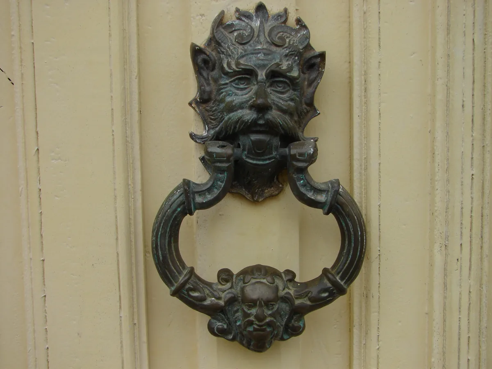
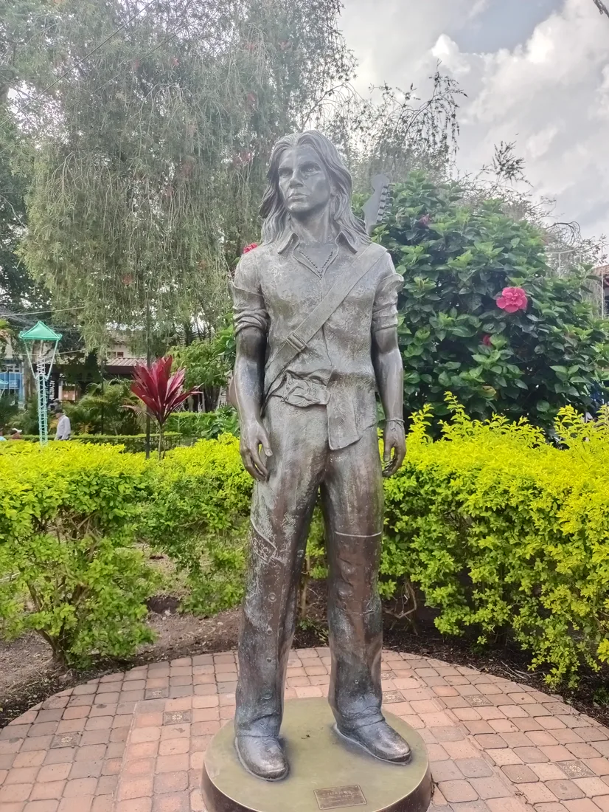

Nació el 9 de agosto de 1972. Desde niño estuvo rodeado de música: su padre y sus hermanos mayores le enseñaron guitarra y juntos tocaban canciones del folclor colombiano. Esa mezcla entre lo tradicional y lo rebelde marcaría el resto de su carrera.
Edición especial Basado en hechos reales
¿Quién es Juanes?
Juanes
Juan Esteban Aristizábal Vásquez
Cantante, compositor y guitarrista colombiano. Nació en Medellín en 1972 y pasó su infancia entre Medellín y Carolina del Príncipe, Antioquia. De la banda de metal de su adolescencia a ser uno de los artistas más premiados de la música en español: su historia es el punto de partida de este universo.
Recorre su carrera
El origen
De Medellín al thrash metal, mucho antes del pop latino.


En 1988 fundó Ekhymosis, una banda de thrash metal que se convirtió en una de las agrupaciones más importantes del rock colombiano de su tiempo, hasta separarse a finales de los noventa.
La carrera, número a número
Arrastra la púa por la cuerda, desliza las viñetas o dale a reproducir. Cada punto de la cuerda es un momento de su historia.
Nace en Medellín
- Álbumes
- 0
- Grammy
- 0
- Hito
- 1/27
-
1972
Vida
Nace en Medellín
El 9 de agosto nace Juan Esteban Aristizábal Vásquez. Crece entre Medellín y Carolina del Príncipe.
-
1988
Música
Nace Ekhymosis
Funda la banda de thrash metal con la que se forma en el rock colombiano.
-
1997–98
Vida
Rumbo solista
Ekhymosis se disuelve a finales de los noventa y decide seguir su camino solo.
-
2000
Álbum
Fíjate Bien
Su debut como solista, con la producción de Gustavo Santaolalla.
-
2001
Premio
Tres Latin Grammy
De siete nominaciones gana tres, entre ellas Mejor Artista Nuevo.
-
2002
Álbum
Un Día Normal
El disco de «A Dios le pido» y de «Fotografía», a dúo con Nelly Furtado.
-
2003
Premio
Álbum del Año
Un Día Normal gana el Latin Grammy a Álbum del Año, y «Es por ti», a Grabación del Año.
-
2004
Álbum
Mi Sangre
El álbum de «La camisa negra».
-
2005
Reconocimiento
Time 100
La revista Time lo incluye entre las cien personas más influyentes del mundo.
-
2006
Activismo
Fundación Mi Sangre
La crea con Catalina Cock Duque para atender a víctimas de minas antipersona en Colombia.
-
2006
Reconocimiento
Caballero de las Artes
Francia lo nombra Caballero de la Orden de las Artes y las Letras.
-
2007
Álbum
La Vida… Es un Ratico
Su cuarto álbum de estudio, el de «Me enamora».
-
2008
Activismo
Paz sin Fronteras
El 16 de marzo reúne a más de 600.000 personas en el puente Simón Bolívar, en la frontera con Venezuela.
-
2008
Premio
Triple corona latina
Álbum del Año por La Vida… Es un Ratico, y Canción y Grabación del Año por «Me enamora».
-
2009
Activismo
Paz sin Fronteras II
El 20 de septiembre, en la Plaza de la Revolución de La Habana, ante más de un millón de personas.
-
2009
Grammy
Primer Grammy
Mejor Álbum Pop Latino por La Vida… Es un Ratico.
-
2010
Álbum
P.A.R.C.E.
Su quinto álbum de estudio.
-
2012
En vivo
MTV Unplugged
Su concierto acústico gana el Latin Grammy a Álbum del Año.
-
2013
Grammy
Segundo Grammy
Mejor Álbum Pop Latino por MTV Unplugged.
-
2014
Álbum
Loco de Amor
Su sexto álbum de estudio.
-
2017
Álbum
Mis planes son amarte
Su séptimo álbum de estudio.
-
2019
Álbum
Más futuro que pasado
Su octavo álbum de estudio.
-
2019
Reconocimiento
Persona del Año
La Academia Latina de la Grabación le rinde su homenaje anual.
-
2021
Álbum
Origen
Su noveno álbum de estudio.
-
2022
Grammy
Tercer Grammy
Mejor Álbum de Rock o Alternativo Latino por Origen.
-
2023
Álbum
Vida Cotidiana
Su décimo álbum de estudio.
-
2024
Grammy
Cuarto Grammy
Mejor Álbum Pop Latino por Vida Cotidiana.
-
2026
Álbum
Juanesteban
Celebra más de 25 años como solista con un álbum conceptual de 16 canciones.
Su música, en tiempo real
Antes de seguir leyendo, dale play. La banda sonora de esta historia empieza aquí, directo desde su perfil oficial de Spotify.
▶ Play
Una carrera premiada
- +25 Latin Grammy
- 4 Grammy
- +15M Discos vendidos en el mundo
- 12 Álbumes publicados
Más allá de la música
Un artista con
conciencia social.
En 2008, en medio de una crisis diplomática entre Colombia, Ecuador y Venezuela, impulsó Paz sin Fronteras, un concierto masivo en la frontera colombo-venezolana que reunió a artistas de toda Latinoamérica y a cientos de miles de personas. Ese gesto resume algo constante en su carrera: usar la música como puente, no solo como espectáculo.
De la vida real al mito
I Su historia inspira Cuerdasdel Destino El cómic digital interactivo de Helikón toma la esencia de este viaje artístico — no como biografía literal, sino como punto de partida para una historia de ficción sobre pasión, destino y arte. Explorar el cómic →